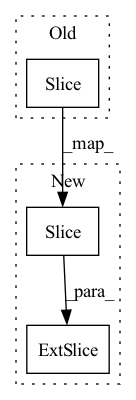

Pattern ID :2419
Before Change
weight = weight * rearrange(pos_x, "i -> i ()") * rearrange(pos_y, "j -> () j")
if self.causal:
weight, bias = weight[:n, :n], bias[:n ]
mask = torch.ones(weight.shape[:2], device = device).triu_(1).bool()
weight = weight.masked_fill(mask, 0.)
After Change
weight = weight * rearrange(pos_x, "h i -> h i ()") * rearrange(pos_y, "h j -> h () j")
if self.causal:
weight, bias = weight[:, :n, :n], bias [:, : n]
mask = torch.ones(weight.shape[-2:], device = device).triu_(1).bool()
mask = rearrange(mask, "i j -> () i j")
weight = weight.masked_fill(mask, 0.)In pattern: SUPERPATTERN
Frequency: 5
Non-data size: 3
Instances Fragment ID: 8113279
Project Name: lucidrains/g-mlp-pytorch
Commit Name: 9be8eed91fdd4626c1b485db06b7518b23e99dff
Time: 2021-08-13
Author: lucidrains@gmail.com
File Name: g_mlp_pytorch/g_mlp_pytorch.py
M Class Name: SpatialGatingUnit
N Class Name: SpatialGatingUnit
M Method Name: forward(3)
N Method Name: forward(3)
M Parent Class: nn.Module
N Parent Class: nn.Module
M File Name: g_mlp_pytorch/g_mlp_pytorch.py
N File Name: g_mlp_pytorch/g_mlp_pytorch.py
M Start Line: 105
M End Line: 125
N Start Line: 110
N End Line: 142
Before Change
attention_weighted_encoding = gate * attention_weighted_encoding
h, c = self.decode_step(
torch.cat([embeddings[:batch_size_t, t, :], attention_weighted_encoding], dim=1),
(h[:batch_size_t], c[:batch_size_t ])) // (batch_size_t, decoder_dim)
preds = self.fc(self.dropout(h)) // (batch_size_t, vocab_size)
predictions[:batch_size_t, t, :] = preds
alphas[:batch_size_t, t, :] = alphaAfter Change
h[:batch_size_t]) // (batch_size_t, decoder_dim)
else:
h = self.decode_step(
torch.cat([self.embedding(torch.argmax(predictions [: batch_size_t, t, :],dim = 1)), attention_weighted_encoding], dim=1),
h[:batch_size_t]) // (batch_size_t, decoder_dim)
preds = self.fc(self.dropout(h)) // (batch_size_t, vocab_size)
predictions[:batch_size_t, t, :] = preds Fragment ID: 8113266
Project Name: qs956/latex_ocr_pytorch
Commit Name: 0455746d6d3141dfc06cd15fb9cd67a0b9defcfc
Time: 2020-03-21
Author: qs956@163.com
File Name: model/model.py
M Class Name: DecoderWithAttention
N Class Name: DecoderWithAttention
M Method Name: forward(5)
N Method Name: forward(4)
M Parent Class: nn.Module
N Parent Class: nn.Module
M File Name: model/model.py
N File Name: model/model.py
M Start Line: 231
M End Line: 250
N Start Line: 214
N End Line: 271
Before Change
resyn_audio = torch.cat([self.output_cache.to(audio.device), resyn_audio], dim=-1)
if resyn_audio.shape[-1] > orig_len:
resyn_audio = resyn_audio[:, :orig_len]
self.output_cache = resyn_audio[orig_len: ]
return resyn_audioAfter Change
// output cache (delay)
resyn_audio = torch.cat([self.output_cache.to(audio.device), resyn_audio], dim=-1)
if resyn_audio.shape[-1] > orig_len:
self.output_cache = resyn_audio [:, orig_len :]
resyn_audio = resyn_audio[:, :orig_len]
return resyn_audio Fragment ID: 8113281
Project Name: hyakuchiki/realtimeddsp
Commit Name: 3e605ad62ee6bdd1474b2394c6a2fd89a8ed23a0
Time: 2022-06-11
Author: nmwmb23@outlook.jp
File Name: diffsynth/stream.py
M Class Name: CachedStreamEstimatorFLSynth
N Class Name: CachedStreamEstimatorFLSynth
M Method Name: forward(2)
N Method Name: forward(2)
M Parent Class: nn.Module
N Parent Class: nn.Module
M File Name: diffsynth/stream.py
N File Name: diffsynth/stream.py
M Start Line: 199
M End Line: 222
N Start Line: 197
N End Line: 219
Before Change
// prepare precomputed causal mask
causal_mask = self.causal_mask[:n ]
causal_mask = repeat(causal_mask, "i j -> b i j", b = b * h)
// compute keys and valuesAfter Change
// causal mask
i, j = sim.shape[-2:]
causal_mask = self .causal_mask[: i, :j]
causal_mask = repeat(causal_mask, "i j -> b i j", b = b * h)
sim = sim.masked_fill(causal_mask, -torch.finfo(sim.dtype).max) Fragment ID: 8113287
Project Name: lucidrains/nuwa-pytorch
Commit Name: 7e90aea7b2fffd2df6c4c674ff848f39d03df9ed
Time: 2022-01-02
Author: lucidrains@gmail.com
File Name: nuwa_pytorch/nuwa_pytorch.py
M Class Name: Sparse3DNA
N Class Name: Sparse3DNA
M Method Name: forward(3)
N Method Name: forward(3)
M Parent Class: nn.Module
N Parent Class: nn.Module
M File Name: nuwa_pytorch/nuwa_pytorch.py
N File Name: nuwa_pytorch/nuwa_pytorch.py
M Start Line: 335
M End Line: 358
N Start Line: 352
N End Line: 408
Before Change
ord_prob = F.log_softmax(concat_feats, dim=1)
return ord_prob.view(-1, ord_num, H, W)
ord_prob = F.softmax(C, dim=1)[:, 1, : :]
ord_prob = ord_prob.view(-1, ord_num, H, W)
ord_label = torch.sum((ord_prob > 0.5), dim=1).view(-1, 1, H, W)
return ord_prob, ord_labelAfter Change
ord_prob[:, 1::2, :, :] = prob[:, 1, :, :, :]
return ord_prob
ord_prob = F .softmax(concat_feats, dim=1)[:, 0, : :]
ord_label = torch.sum((ord_prob > 0.5), dim=1).reshape((N, 1, H, W))
return ord_prob, ord_label
Fragment ID: 8113284
Project Name: dontlovebugs/superviseddepthprediction
Commit Name: 07fe1714fc568b25bd80debe8dd3ab800ff576a8
Time: 2020-05-02
Author: wangxin_buaa@163.com
File Name: dp/modules/decoders/OrdinalRegression.py
M Class Name: OrdinalRegressionLayer
N Class Name: OrdinalRegressionLayer
M Method Name: forward(2)
N Method Name: forward(2)
M Parent Class: nn.Module
N Parent Class: nn.Module
M File Name: dp/modules/decoders/OrdinalRegression.py
N File Name: dp/modules/decoders/OrdinalRegression.py
M Start Line: 26
M End Line: 41
N Start Line: 28
N End Line: 45